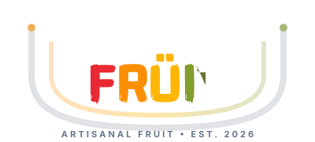
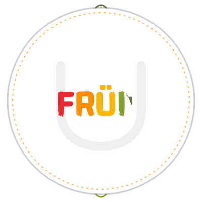

UFRÜIT Identity Matrix
Showcasing the approved Canonical Master Logo (Option 2: Organic & Natural) alongside three brand-new Reimagined Explorations inspired by your artisanal fruit shop, uniforms, and packaging.
Canonical Master Logo (UFRÜIT LOGO V3)

Primary Master Wordmark
Replaces the legacy Chinese characters with the sculptural curved alphabet U behind the canonical 5-color FRÜIT wordmark.

Dark Mode / Signage Wordmark
Engineered with a warm cream-luminous U backdrop for high contrast on dark uniform apparel, storefront neon, and luxury gift boxes.
Reimagined Logo Concept Series

The "Artisanal Harvest Bowl"
The alphabet U is reimagined as an organic fruit basket/bowl that physically cradles the canonical 5-color FRÜIT wordmark. Two floating leaves above form the umlaut dots, symbolizing hand-picked freshness.

The "Artisanal Quality Seal"
A classic circular stamp emblem inspired by Japanese premium fruit gift boxes and artisanal stamps. The U forms a subtle botanical watermark frame behind the vibrant FRÜIT spectrum wordmark.
The "Fluid Ü-Crown Emblem"
An Airbnb-style modern marketplace symbol: a continuous, flowing U-Smile Leaf Loop in the 5-color fruit spectrum to the left of the canonical FRÜIT wordmark. Can be detached as a standalone embroidered chest badge.
Canonical Brand Identity & Palette Spec
1. Why an Alphabet 'U'?
Replacing the legacy Chinese characters with a sculptural U centers the customer ("U") at the heart of the fruit selection, while making the brand universally legible across international markets.
2. The 5-Color Spectrum
Every letter of FRÜIT retains its canonical color code from your original identity, preserving brand equity while upgrading to scalable vector SVG geometry.
3. Flexible Application
Use the Canonical Master for storefront signage and primary receipts, while deploying Concept 1, 2, or 3 for custom gift packaging, uniforms, and tote bags.